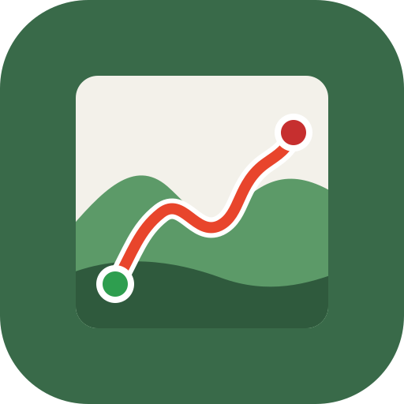
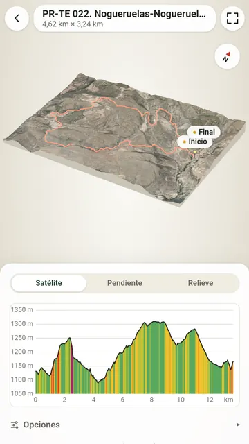
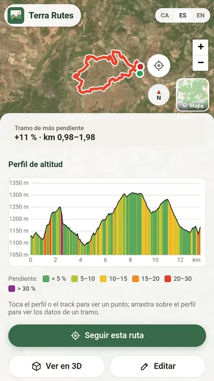
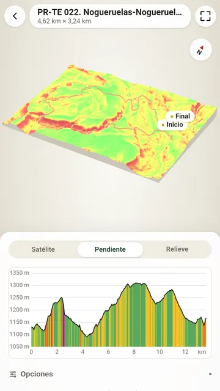
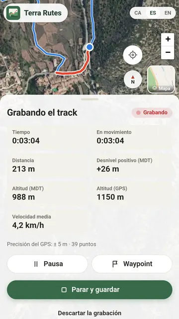

Terra Rutes: rutas y tracks
Terra Rutes es la app para tus rutas a pie, en bicicleta o a caballo: ábrelas, grábalas, síguelas sobre el terreno y déjalas como quieras.
Funciona en el navegador del móvil o del ordenador, sin instalar nada. Pronto, también en Google Play.




Qué puedes hacer
-
Graba y sigue
- Graba el track con el GPS, con pausa y waypoints (en Android, también con la pantalla apagada)
- Sigue una ruta: dónde estás, cuánto has hecho, cuánto queda, la subida y la bajada que faltan y el tiempo estimado
- Aviso si te sales, con una línea hasta el punto más cercano
- Funciona sin cobertura: la ruta ya está en el móvil
-
Abre y edita
- Abre tracks GPX y KML, varios a la vez
- Únelos: la app propone el orden y el sentido
- Mueve, borra o añade puntos, recorta el inicio o el final, divide el track y limpia los saltos del GPS, con deshacer
-
Conoce la ruta
- Perfil de altitud coloreado por pendiente, sincronizado con el mapa
- Distancia, desnivel, altitudes, pendientes y tiempo estimado con el método MIDE
- Altitudes del modelo del terreno del IGN (5 m), mucho más fiables que las del GPS
- La ruta sobre el relieve en 3D, con la imagen aérea
- Por qué parcelas del Catastro pasa y qué tramos van por montes públicos y vías pecuarias (orientativo)
-
Rutas de ayuntamientos y entidades
- Abre con un enlace o un código QR las rutas que ofrecen ayuntamientos, oficinas de turismo y alojamientos
-
Privada
- Sin cuentas, sin anuncios y sin estadísticas
- Tus rutas y tu ubicación se guardan solo en el dispositivo
Gratis, con un Pro de pago único
Grabar, seguir, ver en 3D y hasta tres rutas son gratis. La versión Pro (compra única, sin suscripción) añade rutas ilimitadas, la edición avanzada, la exportación a GPX y el cruce con el Catastro.
Los datos son orientativos y salen de datos públicos. El tiempo estimado no tiene en cuenta el tipo de camino, la meteorología ni la forma física.
Fuentes de los datos
- Catastro: Dirección General del Catastro
- Modelo del terreno y ortofotos del PNOA: Instituto Geográfico Nacional (IGN)
- Montes públicos y vías pecuarias: Inventario Español del Patrimonio Natural y de la Biodiversidad (MITECO)
Terra Rutes es una app independiente de L'Abelluco: no representa a ninguna administración pública ni está vinculada a ella.